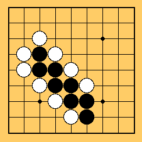
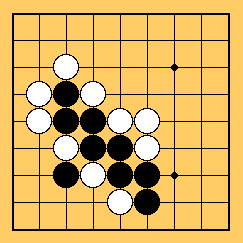

White has so many weak points on the both sides of sturdy black.
Though it's white's turn, he can't fix them with just one move.
Black can easily make a Double Ataris that you have learned in 47 Kyu.(See below)

Home
 Home
Home
 Table Of Contents
Table Of Contents